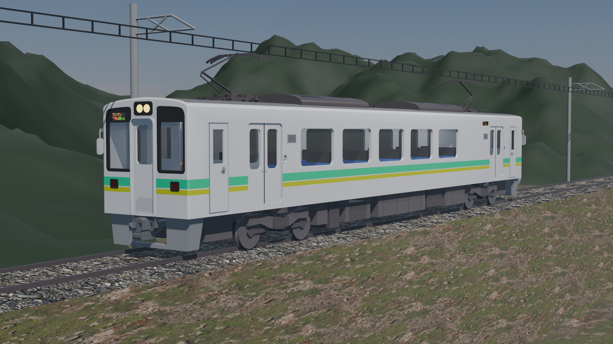
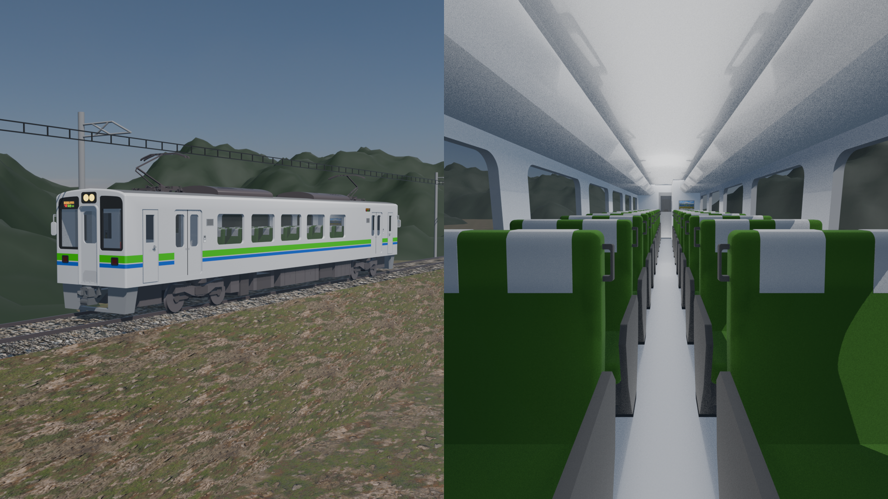
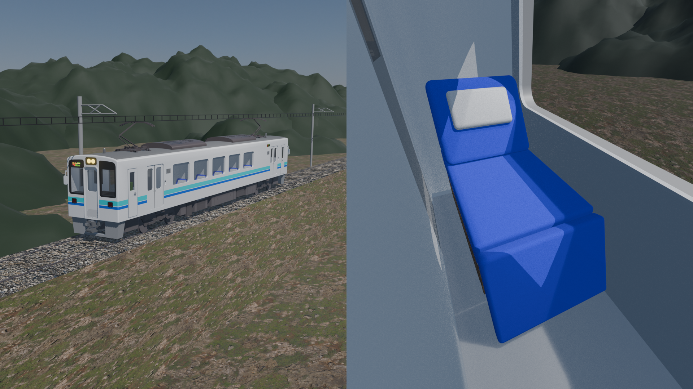

車両図鑑
ここでは、月山線で使用されている車両について取り上げます。
UZ-1000形0番台

UZ-1000形0番台
羽前急行の主力車両で、全車両が普通列車に使用されます。
営業最高時速は120km/hです。
車内は4人掛けのボックスシートで、高架区間では車窓を楽しむことができます。
UZ-1000形1000番台

UZ-1000形1000番台
急行GREEN EXPRESSで使用される車両です。
営業最高時速は130km/hで、繫忙期には2両編成に増結して運行されます。
車内は2×2のクロスシートで、手動で方向を変えることができます。
UZ-1000形2500番台

UZ-1000形2500番台
深夜快速にのみ使用される、特別な車両です。
営業最高時速は160km/hで夜行型に改造されており、全席が個室になっています。
車内はフルフラットに倒せる座席で、快適な夜行列車の旅を提供します。